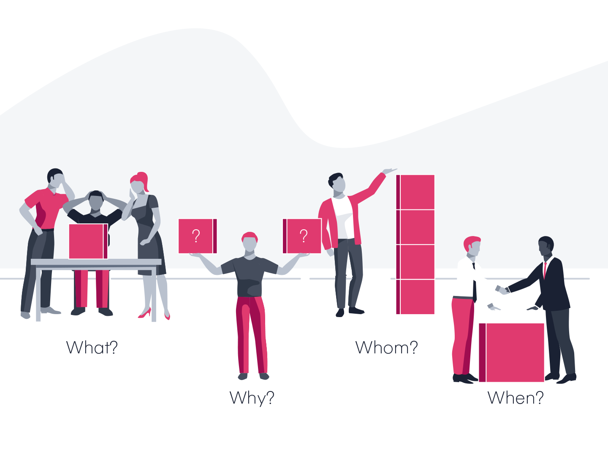

At its core, a user story describes something that the user wants to accomplish by using the
software product. They
originated as part of the Agile and Scrum development strategies, but for designers they mainly
serve as reminders of
user goals and a way to organize and prioritize how each screen is designed.
A user story is a very short story—about one sentence long, in fact. Here’s the template: “As a
user I want to … [basic
user goal].” Because these stories are so short and specific, it takes many of them to cover
every possible use case. In
fact, we try to take each story and see how far it can be broken down.
For example, a user story might start out:
-
“As a user I want to create a new account.”
But what is really involved in creating a new account? The user needs to supply a username,
password, and other
pertinent information. Each individual action needs a corresponding user story, and the more
specific each story is, the
easier things will be later on for designers and developers. So “create a new account” could
actually be broken down
further:
- “As a user I want to type in a new username.”
- “As a user I want to enter a password.”
- “As a user I want to re-enter my password to verify it.”
- “As a user I want to submit this information and create an account.”
It may be tempting to simply dive in and start coding with the hopes of designing as you go, but
clearly mapping out a user story eventually saves the developer/ designer a considerable amount
of time in the later stages. The following are some of the advantages of creating a user story.
- Scoping of the project by getting a clear understanding of the requirements and
expectations of the client
- Facilitates in creating a feasible timeline for delivery
- Facilitates in getting useful feedback from the client within the shortest time possible

Some people prefer to call them wireframes, mockups, and others prototypes but essentially they
mean the same thing.
Mockups refer to a graphical representation of how the interfaces a user interacts with, will
look like. This is a very essential stage in the process of Front End Development and the
following aspects should be put into consideration when designing mockups;
- Aesthetics: i.e Look and feel of the interface, colors and harmony between them. You can
use multiple online tools to generate color maps
- Intuition: A user should be able to easily figure out the functions of different
features on the screen without too much thought
- Functionality: Every feature on the UI should serve a purpose inorder to avoid clutter
and keep it clean and simple
- Memory: Do not flood the user with too much information at once, or else, they might get
confused. If the interface is getting too cluttered, break it into components that load
in succession
- Minimum User Effort: Keep user effort to a minimum e.g. from the perspective of getting
a user to do calculations in their head! and then enter the result in the system. Thats
a recipe for errors.
One of the well known aspects of software development, both front and back end is that the work
is never done untill the application is decommissioned.
Requirements are ever changing and users are always coming up with new perspectives on how to
execute their tasks. To put a handle on this, its important to come to an agreement with the
client within a certain scope of features or functionalities, therefore before starting
developement, there should be a clear understanding/ agreement between the developer and all
stakeholders i.e. users, other dev team members and managers.
Front End Development has come a long way, from the days of plain HTML and CSS, to javascript
growing with frameworks like Angular, React, Vue and so many more. Currently it is very possible
to build a fully fledged application with just these three technologies.
has changed drastically over the years to support better displays on
the browser. Some of
the most outstanding features of HTML currently are;
- MULTIMEDIA SUPPORT: Audio and Videos of all formats can be played on the browser without
the need to install a tonne of other tools in the background. with just the following
code, you could have your video accessible with all controls.
<video src=”Video-file-path” controls=”controls” width=”300″ height=”150″>
</video>
<audio src=”Video-file-path” controls=”controls”>
</audio>
- LOCALSTORAGE: Where a user can store data on the browser and still be able to retrieve
it even after the browser has been re-opened. In some online applications, this has been
used as a backup for times of network outtages
, just like all other technologies has evolved to incredible
possibilies that can take your
web page to the next level even before javascript some of the most outstanding which are;
-
CSS variables that enhance flexibility in styling elements i.e
:root {
--primary-color: #752914;
--secondary-color: #6397AF;
}
-
FLEXBOX PROPERTY: This greatly enhanced the placement of properties on the webpage
without having lengthy positioning attributes.
.container {
background: #E6E6E6;
display: flex;
flex-direction: column;
align-items: center;
padding: 5px 10px;
}
the magic and backbone behind most web applications has
probabbly advanced more than
all the other frontend technologies combined. The language has been forked to create different
variations because its just that popular. One of the more interesting quotes i have come across
is Software ate the world. The Web ate software. Javascript ate the web. Javascript
has many outstanding functionalities in front end design, but a few that take the top are;
- DATA BINDING: The whole point of front end design is to avail users with information in
a manner that makes sense to them. Even better if that information is reflected in real
time without affecting the performance of the application. Two Way Data binding
facilitates a user to persist input to the application and possibly view it in multiple
related sections even as the data changes
<input > {{someValueHere}} </input>
- ASYNCHRONOUS PROCESSING: Javascript is an asynchronous language in that commands are not
executed in succession. This is a great boost on performance as processes dont have to
wait for one another before their own execution is initiated. For the unique cases where
synchronization is required, this can be handled by many options e.g async functions,
promises and callback functions. the following example is of a promise
var promise = new Promise((resolve, reject) => {
setTimeout(() => resolve('Done!'), 2000);
});
async function suspense() {
console.log('Wait for it...’);
var result = await promise;
console.log(result);
}
suspense();
Front End Testing is also quite a wide field on its own and it can be tricky as the parameters
may vary across various applications. However the main considerations one should have should be
among the following;
- Decide on the tool to use
- Decide on the budget of the testing exercise
- Define the scope of the tests
- Define the timeline of the tests
- Define the test methodologies you will apply e.g Regression tests, Responsiveness,
Performance checks, Unit tests etc
Cloud services have been Gods gift to the Tech world (IMHO), especially for non-proprietary
applications that are built by learners and small teams either for the purpose of self education
or to share an idea with the world. They have taken app deployment from the generic hosting
services that were unreliable for scaleability, unaffordable for personal projects and some too
complex to use for beginners. The following tools have greatly bridged the gap between
developers and clients where clients can now follow updates in real time from any part of the
world as long as they can access the internet. The following are some of the free and paid
hosting options and tools that developers can use to put their work online